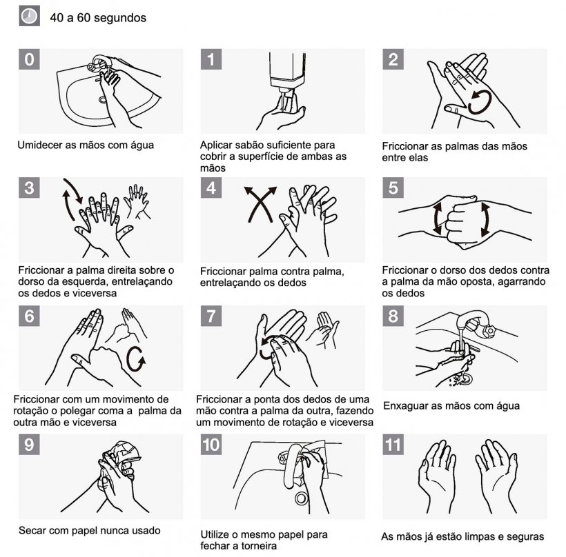

Biossegurança
Sobre Biossegurança:
A biossegurança na estética é essencial para garantir a segurança tanto da nossa equipe quanto dos nossos pacientes. Um procedimento mal executado, a falta de higienização adequada dos instrumentos e equipamentos podem resultar em complicações graves na vida das pessoas.
Para a prevenção de problemas desse tipo, existem diversas medidas de segurança que antes de executar um procedimento precisamos tomar para garantir a integridade de todos, mas para isso é necessário implementar processos, além de fiscalizá-los constantemente.
EPIs:
- Luvas: Pois evitam a contaminação cruzada e protegem as mãos contra agentes biológicos e químicos.
- Máscaras: Protegem contra gotículas, prevenindo a inalação de microorganismos e a disseminação de doenças infecciosas.
- Toucas: Pois cobrem os cabelos e, assim, evitam a contaminação dos procedimentos por fios de cabelo soltos.
- Jalecos: Eles protegem o corpo e as roupas contra respingos e contaminação durante os procedimentos.
- Calçados fechados: Voltados para a proteção dos pés contra quedas de objetos cortantes e possíveis lesões durante os procedimentos estéticos.
Além de toda a preocupação com os EPIs precisamos também lavar as mãos corretamente, observe a imagem ilustrativa de como faze-lo.
